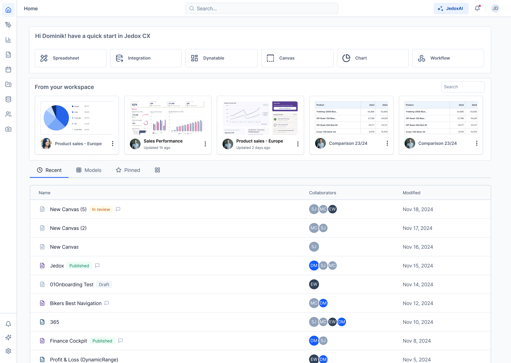
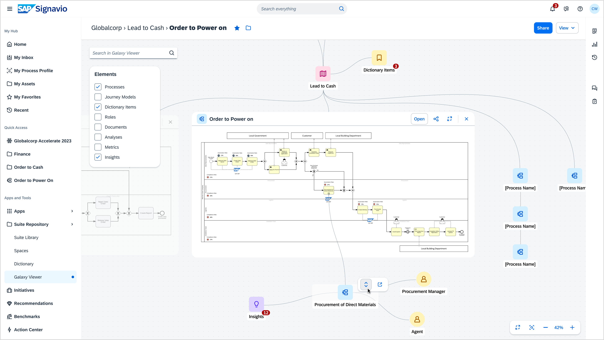
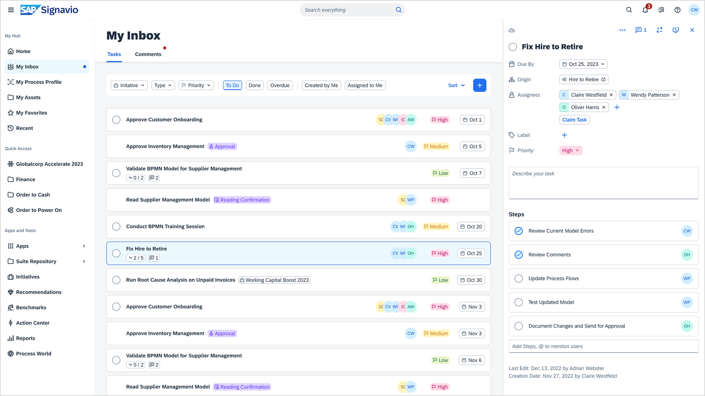

Hi! I'm Ori Cohen.
Leading design at Jedox.
I'm a design leader with nearly 15 years of experience shaping UX/UI across startups, scale-ups, and global enterprises. Currently, I lead design at Jedox.com. Previously, I designed and led teams at Volkswagen, SAP, and other key players in the Tel Aviv and Berlin tech ecosystems. Also a ☕ bitter coffee lover and an ⛰️ average indoor climber.
A product design leader focused on agile leadership, strategy and innovation — and on designing and building digital products that leave people happy using them.
I manage a diverse UX/UI team across distributed, scalable streams: UX research, cross-functional projects and the design system. That means leading end-to-end design processes and organisational collaboration, alongside mentoring, coaching and people development.
Before Jedox and SAP Signavio, I worked at Spark Networks, Volkswagen AG, PeoplePost, Stoooodio and Webplanet, which was acquired by Wix.
B.Des in Design and Visual Communications, Bezalel Academy of Art and Design, Jerusalem. Certified Agile Coach (ICP-ACC).
Outside work: very average indoor bouldering, founding the Israeli-German tech network, and a standing hope of one day unlocking flamenco.
-
I lead the UX/UI team at Jedox, a planning and analytics platform. I'm responsible for user experience research and for the design system, and for growing and scaling the team itself.
The work runs across the organization: I partner directly with executive leadership and with engineering, in a setup built around close collaboration rather than handover.
- Led the research, redesign and release of a modernised, multi-persona analytical FP&A platform — dashboards, modelling, integrations and end-to-end agentic AI capabilities.
- Established and scaled an internal design system for consistent, accessible UI across products, improving accessibility of cross-platform components by 40%.
- Built a user research framework, qualitative and quantitative, that lifted usability benchmarks 15% year over year.

The workspace home — quick starts, recent models and shared work. 
Dynatable — dimensions, measures and pivot configuration. 
Integrator — a transform flowgraph, with JedoxAI alongside it. -
I led design discovery and delivery across the process transformation suite, and the collaboration that had to hold it together across a large organization.
- Supported the release of three new suite products — dashboards, metrics libraries and AI insights — through to general availability.
- Facilitated collaboration across eight teams, keeping design scalable and consistent across product lines, and improving the processes behind it.
- Ran cross-domain UX workshops, design-thinking activities and design sprints for product discovery.

The hub — onboarding, recent changes, tasks and comments in one place. 
Process explorer — sub-processes scored against best run, insights beside them. 
Galaxy Viewer — the process landscape, with a model previewed in place. 
My Inbox — tasks, assignees and steps.